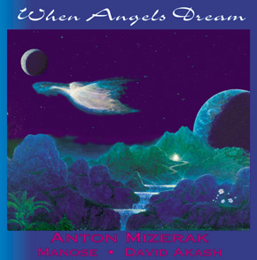

When Angels Dream
Music for Healing and Massage
Anton Mizerak: keyboards and Tibetan bowls.
Manose: bamboo flute
David Akash: bamboo flute
Gary Cooper: guitar
Available in both CD and cassette
A favorite among healers, massage therapists and spa retailers. Anton and Manose were the official music sponsors at Anatriptic Arts Expo and the Face and Body Spa Expo in 2002, Cosmoprof Las Vegas and San Francisco Face and Body Expo in 2003.
MP3 Downloads:
Yaman Anton Mizerak: keyboards & Tibetan bowls; David Akash: bamboo flute
When Angels Dream Anton Mizerak: keyboards & Tibetan bowls; Manose: bamboo flute; Gary Cooper: guitar.
Parvati Anton Mizerak: keyboards & Tibetan bowls; Manose: bamboo flute; Gary Cooper: guitar.
When Angels Dream is 62 minutes of seamless meditative music based on two classical Indian ragas. Bamboo flute, synthesizers, Tibetan bowls and guitar create an ambience conducive to healing, massage and dreamtime. This new CD features spacious keyboards and Tibetan Bowls from Mount Shasta recording artist Anton Mizerak and the incredible flute playing of Manose, the 1995 Radio Nepal instrumentalist of the year.
"The ethereal sounds of floating through the cosmos, of being enveloped in golden white light, of the warmth of a womb-like bed in the morning, all receive equal time here. Indeed, this is music to gently accompany the dawn of a new day." Joe Derderian - massage magazine
"I often play Anton's When Angels Dream for my clients. They usually comment on how much they like the music and that it helps them be more relaxed and more open. I agree." Joseph Heller - founder of Hellerworks.